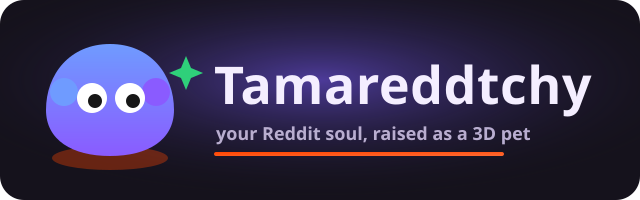
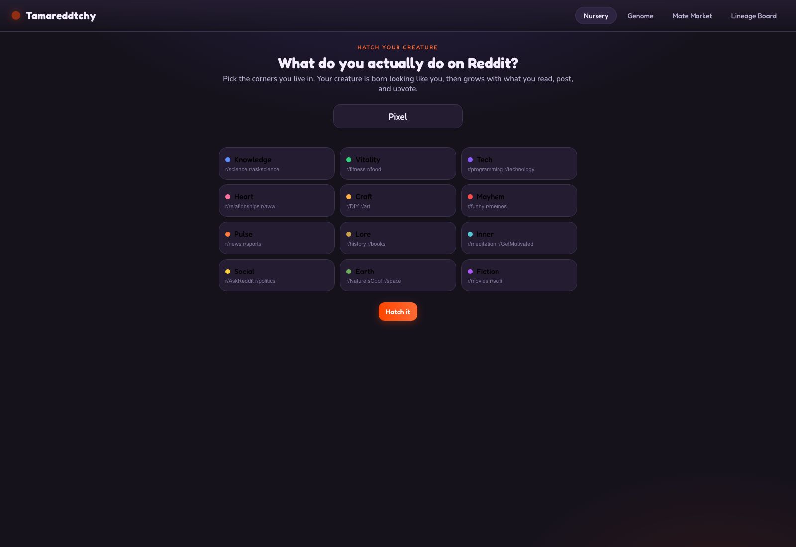
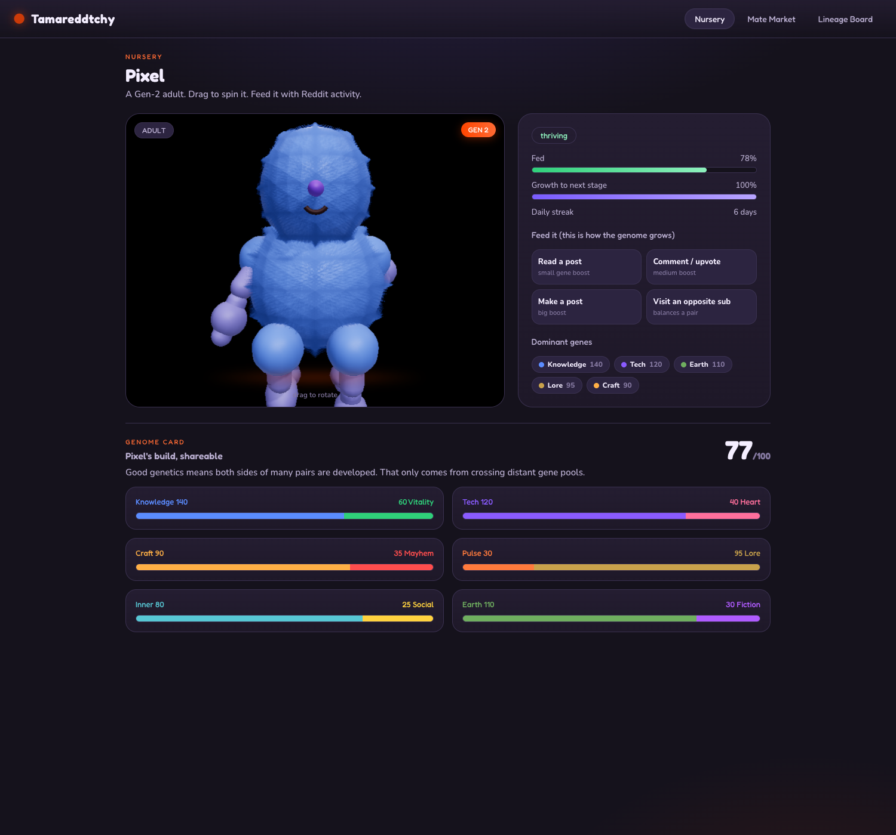
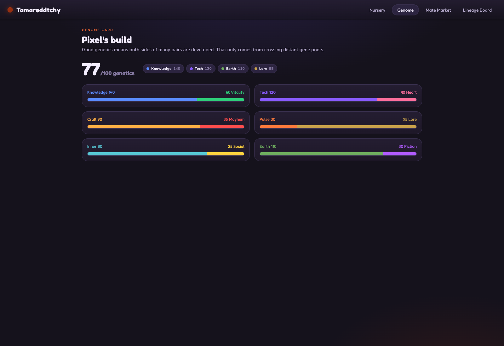
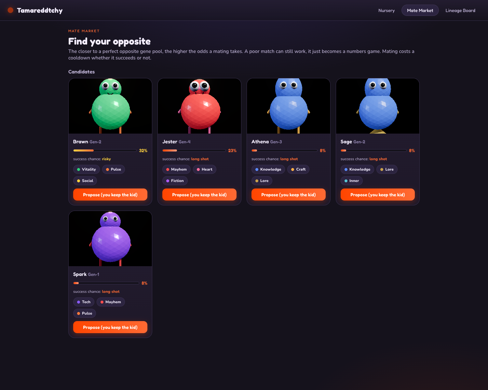

How to run, play, and ship the virtual pet whose body is a living 3D readout of your Reddit personality.
They spike on launch day and vanish by the weekend. Two things are missing every time: a reason to come back, and a reason to care about anyone else playing. Tamareddtchy is designed backwards from the return visit.
| Today | With Tamareddtchy |
|---|---|
| You lurk your usual subs and never leave them | Your best move is to find your opposite and team up |
| A game post is played once and scrolled past | Your creature posts itself when it grows, hatches, or breeds |
| Engagement is an abstract number | Engagement is the food that shapes a creature you are attached to |
| Winning is a high score nobody remembers | Winning is a visible, multi generation lineage you built with others |
You hatch a small creature. From that moment its body is a pure function of what you do on Reddit. The creature is never stored as a picture. It is rebuilt in 3D, every frame, from twelve numbers.
Hatch by picking the corners of Reddit you live in. Feed by reading, commenting, and posting, which pushes points into genes and reshapes the body. Grow from egg to adult across days of nurture, with hunger that decays in real time. Breed with a complementary partner to climb the generations.
Hook: a creature that droops when ignored and a streak you do not want to break. Retention: real time hunger, multi day generation climbs, mate requests that resolve on a return visit. User contributions: every milestone renders an image and posts itself. Reddit-y: the mechanic is upvoting, commenting, and cross community rivalry.
The genome is the whole game. Everything visual and every score derives from these twelve numbers. They are arranged as six complementary opposite pairs, which is what makes "crossing distant gene pools" a real mechanic.
| Pair | Gene A | Gene B | Example subreddits |
|---|---|---|---|
| Mind vs Body | Knowledge | Vitality | r/science . r/fitness |
| Logic vs Feeling | Tech | Heart | r/programming . r/aww |
| Order vs Chaos | Craft | Mayhem | r/DIY . r/funny |
| Now vs Forever | Pulse | Lore | r/news . r/history |
| Self vs World | Inner | Social | r/meditation . r/AskReddit |
| Real vs Dream | Earth | Fiction | r/space . r/movies |
Not a high score on one gene. Good genetics means both sides of many pairs are developed. A creature strong in both Knowledge and Vitality is fitter than one that only grinds Knowledge. You can only reach that by breeding with someone unlike you, which is the entire point.
Each of six body slots is owned by exactly one pair. The pair's balance picks the shape; the pair's magnitude picks the size. Generation pushes the whole rig further from the baseline blob, so lineage depth is visible at a glance.
| Body slot | Driven by | What it shows |
|---|---|---|
| Head | Knowledge / Vitality | domed brain-head vs sleek athletic head |
| Eyes | Tech / Heart | small visor eyes vs big warm doe eyes |
| Torso | Craft / Mayhem | tidy geometric shell vs lumpy chaotic blob |
| Arms | Pulse / Lore | antenna arms vs scroll arms |
| Legs | Inner / Social | single rooted base vs many running legs |
| Aura | Earth / Fiction | orbiting leaves vs a wizard hat |
Two whole-genome derivations finish the look: the palette comes from the two highest genes, and the growth stage (egg, blob, child, adult) comes from total nurture. All of it is computed live in Three.js. Nothing is downloaded.
Mating is a deal between two players, not a symmetric merge. Exactly one offspring is produced and exactly one player owns it. Who keeps it, and what is traded for it, is negotiated. That negotiation is the strategy.
| Pairing | Produces | The strategy |
|---|---|---|
| Gen-1 x Gen-1 | a plain Gen-2 | cheap starter, breed wide for offspring count |
| Gen-3 x Gen-3 | a strong Gen-4 | both want the kid, a hard-fought deal |
| Gen-5 x Gen-1 | an advanced Gen-6 | the Gen-5 holder has the leverage and can demand a price |
Cost to mate: a big hunger hit plus a multi day cooldown, so climbing the generation ladder costs real nurture time. Generation of a child is max(parents) + 1, which is why pairing with a higher generation partner pulls your lineage forward.
Lineage score blends three axes so no single track dominates: depth (deeper generations are worth exponentially more), quality (complementary, developed genomes score high, inbred ones do not), and breadth (every viable offspring adds a bonus).
On first run, the player picks the corners of Reddit they actually frequent. This seeds the genome so the creature looks like them from minute one instead of starting blank. It is honest input: a self declared diet, not a scrape of private history.

Each tile is a gene with the real subreddits it stands for. Pick a few, name the creature, and hatch. The creature is born as a Gen-1 egg already leaning toward the chosen genes.
The creature breathes, blinks, bobs, and droops when neglected. Drag to spin it. Every feed pushes points into a gene and visibly reshapes the body over time.

The panel shows the growth stage, the generation badge, the needs (fed level, growth to next stage, daily streak), and the dominant genes. The "visit an opposite sub" feed action deliberately develops the lagging side of a pair, nudging you toward better genetics.
The "what's your build" card. A single genetics score out of 100 and the six opposite pairs drawn as tug of war bars. This is the screenshot people post to argue about whether someone is really Mayhem dominant.

The score rewards broad development, not lopsided grinding, so a high number is proof you have crossed gene pools. It is identity flavored on purpose, because identity is what Reddit loves to debate.
Every other creature in the subreddit, ranked by how complementary it is to yours, and each rendered live in 3D from its own genome. The strong matches are at the top.

Proposing is a deal: you state who keeps the single offspring and what you trade for it. A strong match makes a healthy, well developed child. Mating two similar creatures makes a busted, comedic, inbred one that is genuinely fun to show off.
One Devvit Web app, published as a single Interactive Post. The shared game logic is imported by the client, the server, and the tests, so the rules can never drift.
| Component | Role | File |
|---|---|---|
| Genome model | genes, scoring, breeding, lineage | src/shared/genome.ts, creature.ts |
| Procedural 3D | grows geometry from the genome | src/client/render.ts |
| Living scene | Three.js scene + animation | src/client/scene.ts |
| Devvit server | Redis endpoints, deals, posts | src/server/index.ts |
| App config | post, server, menu, permissions | devvit.json |
An in-memory world makes the whole game playable locally. Fastest way to see it.
devvit login to authenticate your Reddit account.
devvit upload to upload the app (pulls @devvit/web, builds client and server).
devvit playtest r/yourTestSub to run it live.
In the subreddit, use the mod menu item "Create a Tamareddtchy nursery". That post is the playable game.
Raise something only the whole of Reddit could make.